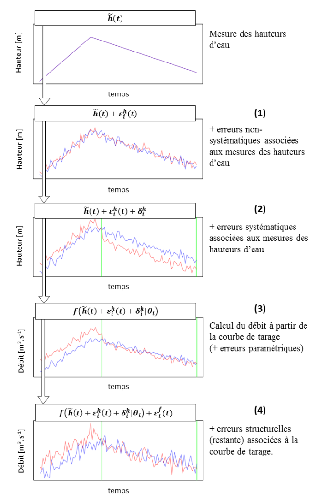

Cette page décrit comment les erreurs provenant de la courbe de tarage (erreurs paramétriques et erreurs structurelles) et celles provenant du limnigramme (erreurs non-systématiques et erreurs systématiques) sont propagées aux hydrogrammes dans BaRatinAGE.
L’estimation d’une courbe de tarage dans BaRatinAGE conduit en fait à 500 courbes de tarage, chacune correspondant à un jeu de paramètres possible (les paramètres sont ceux de l’équation de la courbe de tarage, \(\boldsymbol{\theta}\), ainsi que les paramètres \(\boldsymbol{\gamma}=(\gamma_1,\gamma_2)\) qui permettent de définir l’écart-type de la loi normale de l’erreur structurelle). Le limnigramme est une série temporelle de hauteurs d’eau mesurées \(\tilde{h}(t)\). Les écart-types \(\sigma_A^h\) et \(\sigma_B^h\) (qui correspondent respectivement aux erreurs non-systématiques et systématiques affectant le limnigramme) permettent de générer 500 limnigrammes. La méthode de propagation est décrite ci-dessous pour une courbe de tarage \(i\) (un jeu de paramètres) :
- Pour chaque pas de temps \(t\), une erreur \(\varepsilon_i^h(t)\) est échantillonnée selon la loi normale \(\mathcal{N}(0,\sigma_A^h)\). Celle-ci est ensuite ajoutée au limnigramme mesuré \(\tilde{h}(t)\).
- Pour chaque période où l’erreur systématique affectant le limnigramme est supposée constante, une erreur \(\delta_i^h\) est échantillonnée selon la loi normale \(\mathcal{N}(0,\sigma_B^h)\). Celle-ci est ensuite ajoutée au limnigramme mesuré déjà affecté des erreurs non-systématiques. On a alors un limnigramme numero \(i\) pouvant s’écrire : \(h_i(t) = \tilde{h}(t) + \varepsilon_i^h(t) + \delta_i^h\).
- Pour chaque pas de temps \(t\), un débit \(\hat{Q}_i(t)\) est calculé à partir de la série de hauteurs d’eau \(h_i(t)\), de l’équation de la courbe de tarage \(f\) et du jeu de paramètres \(\boldsymbol{\theta}_i\).
- Pour chaque pas de temps \(t\), une erreur structurelle \(\varepsilon_i^f(t)\) est ensuite ajoutée au débit calculé \(\hat{Q}_i(t)\). Cette erreur est échantillonée selon la loi normale \(\mathcal{N}\left( 0,\gamma_1 + \gamma_2 \hat{Q}_i(t) \right)\).
L’équation synthétisant ces différentes étapes est présentée ci-dessous:
\[Q_i(t) = \underbrace{f \left( \overbrace{\tilde{h}(t) + \varepsilon_i^h(t) + \delta_i^h}^{h_i(t)} ; \boldsymbol{\theta}_i \right)}_{\hat{Q}_i(t)} + \varepsilon_i^f(t)\]
La Figure ci-dessous illustre et résume les différentes étapes présentées ci-dessus.
Principe de la méthode d’échantillonnage considérant deux jeux de paramètres \(\boldsymbol{\theta}_{i_1}\) (en rouge) et \(\boldsymbol{\theta}_{i_2}\) (en bleu) : depuis le limnigramme mesuré jusqu’aux deux hydrogrammes (chacun correspondant à un jeu de paramètres, i.e. à une courbe de tarage possible et à un limnigramme possible).
Pour l’obtention de l’hydrogramme MaxPost (le plus probable), toutes les erreurs sont ignorées : \(Q_{MP}(t) = f(\tilde{h}(t) ; \boldsymbol{\theta}_{MP})\) où \(\boldsymbol{\theta}_{MP}\) correspond au jeu de paramètre de la courbe de tarage MaxPost.